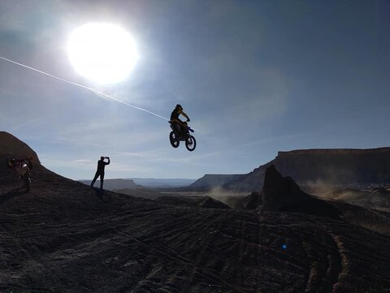
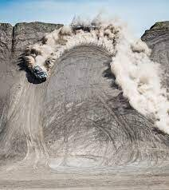

The desert surrounding the small town of Caineville, Utah has become known world-wide as a destination for off-highway vehicle enthusiasts. This region of Utah has a very unique geology. The soil composition is made up of fine silts and mancos shale. This soil weathers very easily, resulting in some of the most sriking geographical features found anywhere in the world.
The entire area is virtually vegetation free and this results in phenomenol open-area riding. The terrain offers a variety of different types of riding from relaxed tame trails, to extreme free-style motorcross style jumps. I promise that you will find everything you could possibly love about riding a motorcycles, ATV's, or side-side style vehicles. Come to Factory Butte! You will not be disappointed that you did.